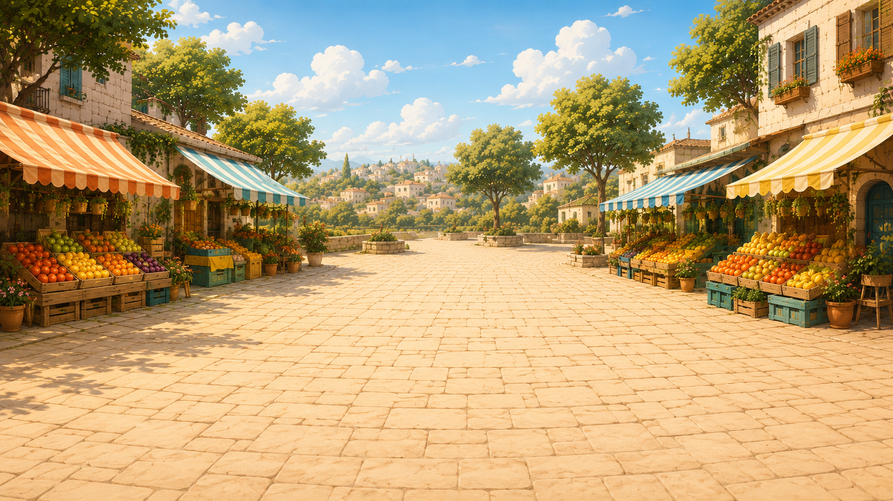

بالسوق
אוֹתוֹ אוֹ שׁוֹנֶה?


אוֹתוֹ אוֹ שׁוֹנֶה? 👂
מִישְׁמִישׁ יַשְׁמִיעַ שְׁתֵּי מִלִּים.
הַקְשִׁיבוּ טוֹב — הַאִם הֵן אוֹתוֹ דָּבָר אוֹ שׁוֹנוֹת?

מִישְׁמִישׁ יַשְׁמִיעַ שְׁתֵּי מִלִּים.
הַקְשִׁיבוּ טוֹב — הַאִם הֵן אוֹתוֹ דָּבָר אוֹ שׁוֹנוֹת?